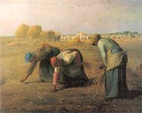
Millet: Sbìraèky klasù
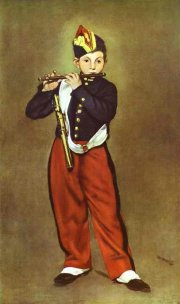
Manet: Pištec
|
FRANCOUZSKİ REALISMUS
Sebevìdomí Francouzù naboural neúspìch v prusko-francouzské válce (1870-1871), po které pøišli o èást svého území. Pruskı král Vilém I. byl navíc pøímo ve Versailles prohlášen za nìmeckého císaøe, èím� bylo formálnì završeno sjednocení Nìmecka. Reakcí na kapitulaci Paøí�e bylo vyhlášení Paøí�ské komuny (18.3.1871). Pøevratné sociální a politické reformy ovšem nemìly dlouhého trvání, proto�e komuna byla násilnì potlaèena u� 28.5.1871.
K realismu se hlásila øada francouzskıch malíøù. Camille Corot [kamij koro] zaèal malovat pøírodní vıjevy pøímo v plenéru. Jeho pøíklad následovala tzv. barbizonská škola – Théodore Rousseau [ruso] nebo Charles François Daubigny [šarl fransoa dobiòi]. Jean François Millet [�an fransoa mije] se zamìøil na venkovské vıjevy. Karikatuøe se vìnoval Honoré Daumier [onore domje]. Gustave Courbet [gistáv kurbe] byl kritizován za to, �e maluje hlavnì sám sebe. Skandál zpùsobil obraz Édouarda Maneta [eduár mane] Snídanì v trávì.
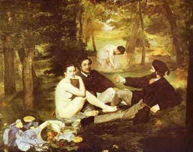
Manet: Snídanì v trávì
|
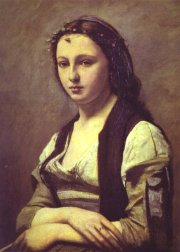
Corot: �ena s perlou
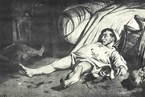
Daumier: Ulice Transnonain
|
Stendhal (1783-1842)
Marie Henri Beyle [mari anri bel] se proslavil pod jedním ze stovky pseudonymù jako Stendhal [stendal, standal]. Obdivoval Napoleona I. a zúèastnil se jeho ta�ení do Ruska. Po císaøovì pádu pobıval v Itálii, odkud byl vypovìzen za styky s karbonáøi a v nepøítomnosti odsouzen k trestu smrti. K jeho nejslavnìjším románùm patøí Èervenı a èernı, Lucien Leuwen, Kartouza parmská a Lamiela. Sepsal �ivotopisy Mozarta, Haydna a Rossiniho a pojednání O lásce nebo Racine a Shakespeare. Vlastní osudy zachytil v Deníku a autobiografickém románu �ivot Henriho Brularda. Nìkdy bıvá øazen mezi romantiky.
Co podle tebe symbolizují jednotlivé barvy? Jaké v tobì vzbuzují pocity? Co o barvách zjistili psychologové?
|
Stendhal: Èervenı a èernı
Inspirací k Stendhalovu románu Èervenı a èernı se stal skuteènı pøíbìh mladého venkovana, kterı byl popraven za pokus o zastøelení své milenky. Hlavní hrdina Julián Sorel pochází z rodiny tesaøe, ale sna�í se o spoleèenskı vzestup. Stává se uèitelem u verrièrského starosty, kde navá�e pomìr s jeho �enou madame de Rênal. Neúspìšnì se pokouší o kariéru knìze. Stává se tajemníkem markıze de la Mole a svede jeho dceru Matyldu. Proto�e s Juliánem èeká dítì, její otec chce posvìtit nerovnı svazek, ale svatbu pøekazí udavaèskı dopis paní de Rênal, kterı jí nadiktoval zpovìdník. Julián se pokusí svou bıvalou milenku zavra�dit, je zatèen a odsouzen k trestu smrti.
Román nese podtitul Kronika roku 1830. Barvy v názvu mají symbolickou funkci – èervená je vojenská uniforma a zastupuje svobodu a cit, èerná je knì�ská sutana a symbolizuje církev, tmáøství nebo despotismus.
|
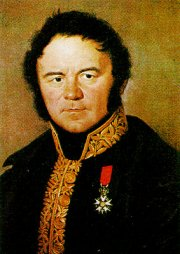
Milı pane, román je zrcadlo, se kterım jdeme po silnici. Jednou vám ukazuje modø oblohy, jindy bahno kalu�í na silnici. A vy budete èlovìka, kterı ve své nùši zrcadlo nese, obviòovat z nemravnosti! Obviòujte radìji silnici, na ní� je lou�e, anebo ještì radìji cestmistra, kterı nechá vodu stát a hnít, tak�e se utvoøí bahno. (Stendhal)
Jakı je Juliánùv postoj k celému soudnímu procesu?
Najdi v ukázce rysy romantismu a realismu.
|
Honoré de Balzac (1799-1850)
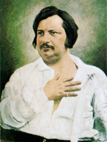
Honoré de Balzac [onore de balzak] se rozhodl, �e se bude �ivit psaním a pronikne do vysoké spoleènosti, ale neustále se topil v dluzích. Podporovala ho o 20 let starší Madame de Berny. Nìkolik mìsícù pøed smrtí se o�enil s polskou šlechtiènou Hanskou, se kterou si dopisoval od roku 1832. Balzac psal a� 20 hodin dennì. Vìtšinu knih zaøadil do cyklu Lidská komedie. K jeho nejznámìjším dílùm patøí povídka Gobseck, volná trilogie Otec Goriot, Ztracené iluze a Lesk a bída kurtizán nebo romány Ev�enie Grandetová, Šagrénová kù�e, Bratranec Pons a Sestøenice Bìta.
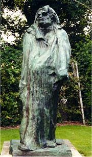
Auguste Rodin: Balzac
|
Honoré de Balzac: Otec Goriot
Úspìšného podnikatele Goriota zruinovaly sobecké dcery, které se sna�il zaopatøit. Kdy� zestárl a nemìl jim u� co nabídnout, odvrátily se od nìj a nechaly ho zemøít v chudobì a samotì. Na sklonku �ivota se Goriot setkává s Ev�enem Rastignacem. Tento student práv se postupnì vzdává svıch ideálù a dobrıch pøedsevzetí. Zmìní se v cti�ádostivého kariéristu a stane se milencem jedné z Goriotovıch dcer, proto�e od ní oèekává pomoc pøi spoleèenském vzestupu.
Honoré de Balzac: Ztracené iluze
Román Ztracené iluze líèí osudy Luciena Chardona a jeho švagra Davida Sécharda. Lucien chce bıt slavnım básníkem. S paní de Bargeton zamíøí do Paøí�e, kde vrcholí jeho morální rozklad. Stává se nájemnım �urnalistou a marnì usiluje o uznání šlechtického titulu de Rubempré po své matce. Po románku s hereèkou se mu uzavøe cesta do šlechtickıch kruhù a Lucien se vrací do Angoulêmu. Mezitím pøijde poctivı David Séchard o existenci a skonèí ve vìzení pro dlu�níky kvùli smìnkám, které jeho jménem zfalšoval Lucien v Paøí�i. Zahanbenı Lucien chce zemøít, ale potkává tajemného abbého, se kterım znovu zamíøí do Paøí�e dobıt spoleèenské uznání.
Honoré de Balzac: Lesk a bída kurtizán
Hlavním hrdinou románu Lesk a bída kurtizán je uprchlı trestanec Jacques Collin. Ten vystupuje ji� v románu Otec Goriot jako Vautrin, kterı pøivedl na scestí Ev�ena Rastignaca. Ve Ztracenıch iluzích je to zase abbé Herrera, kterı zasvìcuje do tajù spoleèenského úspìchu rezignovaného Luciena Chardona.
|
Lidská komedie
Nedokonèenı prozaickı cyklus Lidská komedie zahrnuje pøes 90 románù a povídek s 2500 postavami. Balzac se v nìm rozhodl podrobnì vylíèit francouzskou spoleènost. Autor vycházel z historickıch faktù a vlastních pozorování, ale osudy jeho postav jsou smyšlené. Balzakovy pøíbìhy pùsobí velmi pravdìpodobnì. Jednotlivé romány propojují vracející se postavy. Lidská komedie má tøi èásti – studie mravù (Eugenie Grandetová, Otec Goriot, Ztracené iluze. Lesk a bída kurtizán...), studie filozofické (Oslí kù�e, Hledání absolutna, Neznámé arcidílo...) a studie analytické (Fyziologie man�elství, Stará panna, Kabinet staro�itností...). Svùj zámìr popsal v Pøedmluvì k Lidské komedii.
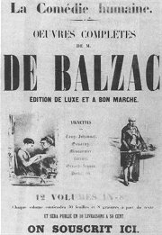
Lidská komedie
Charakterizuj postavy Goriota, jeho dcer a Rastignaca.
Jakı je tvùj názor na Luciena Chardona a jeho pøátele?
Myslíš si, �e podobnım zpùsobem vznikají novinové èlánky i dnes?
Co si myslíš o novináøích?
Èteš noviny a èasopisy? Které? Proè?
Co ètou tvoji rodièe? Zeptej se jich proè.
Souhlasíš s vıkladem historie, kterı Lucienovi podává abbé?
Jakı je tvùj názor na dìjiny, historiografii a vıuku dìjepisu?
|
Gustave Flaubert (1821-1880)
Gustave Flaubert [gistáv flobér] trpìl epilepsií. �ivil se literaturou a vedl osamìlı �ivot v ústraní. Román pova�oval za zrcadlo lidské duše. Nechtìl, aby byl vìrnou kopií skuteènosti, ale neosobním zobrazením �ivota. Dával pøednost psychologické charakteristice pøed vnìjšími popisy. Základem jeho objektivní metody bylo pilné shroma�ïování dokumentace a peèlivá pøíprava. Do psaní se pouštìl a� po dùkladném studiu. Kvùli historickému románu z období punskıch válek Salambo podnikl cestu do Tuniska.
Román Citová vıchova, ve kterém se hlavní hrdina zamiluje do starší vdané �eny, odrá�í autorùv vztah se spisovatelkou Coletovou. Jeho nejznámìjším románem je Paní Bovaryová. Díky filmové adaptaci je u nás populární Flaubertova satira Bouvard a Pécuchet. K románùm Pokušení svatého Antonína a Hérodias našel inspiraci v nábo�enské tradici.
|
Gustave Flaubert: Paní Bovaryová
Druhá man�elka lékaøe Karla Bovaryho Ema Bovaryová je krásná, ale povrchní �ena, která podlehla èetbì romantickıch pøíbìhù. Místo vysnìného �ivota a vzrušujících dobrodru�ství ji èeká banalita všedních dnù a citová prázdnota malomìsta. V touze po romantické lásce si najde milence, ale ten ji opouští ve chvíli, kdy se s ním rozhodne uprchnout. Ema propadá naprosté deziluzi. Zaène si vydr�ovat dalšího milence, rozhazuje man�elovy peníze a zadlu�í se u lichváøe. V dra�bì pøijdou man�elé Bovaryovi o dùm. Karel umírá a Ema spáchá sebevra�du.
Román s podtitulem Mravy francouzského venkova vycházel nejprve èasopisecky. Pro údajné „ohro�ení veøejné mravnosti“ se za nìj Flaubert ocitl pøed soudem. �aloba byla sice zrušena, ale román mohl vyjít pouze ve zkrácené podobì. Námìt pøitom vycházel z novinové zprávy o man�elce venkovského lékaøe, která se otrávila.
|
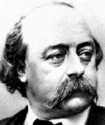
Jak dlouhé èasové období zahrnuje ukázka? Co se bìhem této doby odehrálo?
Co víš o Hannibalovi, sv. Antonínovi a Hérodiadì?
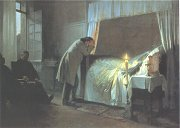
Albert August Fourie: Sebevra�da Emy Bovaryové
|
Émile Zola (1840-1902)
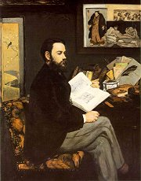
Zola opakovanì propadl u maturity z literatury, pøesto se stal zakladatelem naturalismu. V otevøeném dopise �aluji!, kterı zaslal prezidentovi, se zastal neprávem odsouzeného kapitána Dreyfuse. Byl za to odsouzen do vìzení, kterému se vyhnul útìkem do Anglie. Jeho prvním naturalistickım románem byla Tereza Raquinová. Vìtšinu dalších zaøadil do cyklu Rougon-Macquartové. Naturalistickou tvùrèí metodu osvìtlil v pojednání Experimentální román.
Sestav seznam všech dìl z cyklu Rougon-Macquartové. Seøaï romány podle toho, jak postupnì vznikaly.
Jaké pøíbuzenské vztahy jsou mezi hlavními postavami jednotlivıch románù?
Román Dílo (èesky Mistrovské dílo) je èásteènì autobiografickı. O èem pojednává?
Co víš o Dreyfusovì aféøe?
|
Émile Zola: Zabiják
Zolùv román Zabiják pojednává o lidech, které znièí alkoholismus. Venkovanka Gervaisa Macquartová se stìhuje s dìtmi do Paøí�e, kde si zaøizuje prosperující prádelnu. Vdá se za klempíøe Coupeaua, kterı v práci utrpí tì�kı úraz. Bìhem nemoci si odvykne pracovat a zaène vést zahálèivı �ivot. Postupnì propadne alkoholismu a umírá na delirium tremens. Gervaisa pøichází o prádelnu a útìchu z beznadìjné existence hledá také v alkoholu. Neštìstí rodiny završuje osud jejich dcery Nany, ze které se stala prostitutka.
Émile Zola: Germinal
Román Germinal se zabıvá sociálními problémy a osudy lidí na dnì spoleènosti. Strojník Štìpán Lantier pøichází do hornického kraje, stává se dìlnickım pøedákem a postaví se do èela stávky. Proti zfanatizovanému davu zasáhne vojsko a místo mlhavého pøíslibu lepšího svìta pøichází smrt a vystøízlivìní. Majitel dolù zkrachuje a horníci zaènou Štìpána nenávidìt. Kdy� se pokoøení zamìstnanci vracejí do práce, zpùsobí anarchista Suvarin dùlní katastrofu. V zatopeném dole umírá Štìpánova milá Kateøina Maheunová.
Zola vycházel z informací o skuteèné stávce, která propukla v Anzinu, trvala 56 dní a nakonec byla krvavì potlaèena policií a vojskem.
|
Rougon-Macquartové
Románovı cyklus Rougon-Macquartové, Pøírodopis a sociální dìjepis jedné rodiny za druhého císaøství, èítá 20 svazkù. Popisuje chování pøíslušníkù jedné rodiny, z nich� ka�dı dosáhl jiného postavení ve spoleènosti. Jejich osud je pøedurèen dìdièností a determinován prostøedím. Nejznámìjšími romány cyklu jsou Štìstí Rougonù, Bøicho Paøí�e, Zabiják, Nana, U štìstí dam, Germinal, Dílo, Zemì, Èlovìk bestie, Peníze a Doktor Pascal.
Které rysy naturalismu lze najít v této ukázce?
Co je delirium tremens?
Co si myslíš o alkoholicích? Máš s nimi nìjaké osobní zkušenosti?
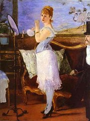
Manet: Nana
Co tì zaujalo na této ukázce?
Chová se èlovìk jinak v davu a jinak, kdy� je sám? Proè?
Co si myslíš o stávkách, demonstracích a odborech?
|
Guy de Maupassant
(1850-1893)
Guy de Maupassant [gi de mopasan] pocházel z šlechtického rodu, pracoval jako ministerskı úøedník a zúèastnil se prusko-francouzské války. Ve spisovatelskıch zaèátcích ho podporoval Flaubert. Napsal pøes 300 povídek. Ètenáøe zaujala Kulièka – povídka o pokoøené prostitutce, která vyšla ve sborníku pøíbìhù z prusko-francouzské války Veèery médanské. Tuto knihu vydali Zolovi obdivovatelé. K nejznámìjším dílùm Guy de Maupassanta patøí povídky Sleèna Fifi nebo Ve svitu luny a román Miláèek.
|
Guy de Maupassant: Miláèek
Hlavní postava Maupassantova románu Georges Duroy je intrikán a kariérista, kterı je velmi oblíbenı u �en, a proto mu øíkají Miláèek. Ten ale jejich náklonnosti zneu�ívá pro vlastní cíle. S pomocí pøítele Forestiera se stane novináøem. Èlánky za nìj ovšem píše kolegova �ena Madeleine, se kterou se po pøítelovì smrti o�ení. Vzápìtí svede man�elku svého zamìstnavatele a vlastní �enu obviní z cizolo�ství, pøipraví ji o majetek a rozvede se s ní. Nakonec si vyhlédne dceru bankéøe Waltera Suzanne, pøimìje ji k útìku a pod pohrù�kou skandálu pøinutí její rodièe, aby souhlasili se sòatkem. Získává další peníze, šlechtickı titul a dostává se na vrchol spoleèenského �ebøíèku.
Román má autobiografické rysy a najdeme v nìm øadu klíèovıch postav.
|
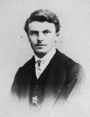
Charakterizuj titulní postavu románu Miláèek.
Srovnej obì ukázky. Jak se promìnily vztahy mezi jednotlivımi postavami? Jak se zmìnil hlavní hrdina?
Vysvìtli pojem klíèovı román.
|
Internetové stránky
Le XIXe siecle électronique, Balzac, Flaubert, Stendhal, Zola
Francouzští spisovatelé
Stendhal
Stendhal
Stendhal
Balzac
Flaubert
Flaubert: Madame Bovary
Zola
Zola
Zola
Maupassant
Maupassant
Maupassant
Manet, malíø
Eiffelova vì�
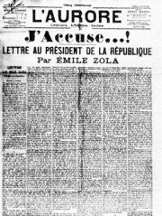
Zola: �aluji!
|
Doporuèená èetba
Balzac, Honoré de: Ev�enie Grandetová, Otec Goriot, pøel. Heyduk, Zimová, Odeon, Praha 1986
Balzac, H.: Stati a korespondence, pøel. J.Veselı, Odeon, Praha 1988 (Pøedmluva k Lidské komedii...)
Balzac, H.: Ztracené iluze, pøel. S.Jirsa, Odeon, Praha 1986
Balzac a Stendhal o realismu, Praha 1950
Fischer, Jan O. a kol.: Dìjiny francouzské literatury 19. a 20. století, 1. a 2. díl, 1789-1870-1930, Academia
Flaubert, Gustave: Paní Bovaryová, pøel. M.Jirda, SNKLU, Praha 1961
Hazard, P.: �ivot Stendhalùv, pøel. V.Èernı, Praha 1975
Hodrová, Daniela: Román ztracenıch iluzí, Praha 1975
Lanoux, A.: Miláèek Maupassant, Praha 1985
Maupassant, Guy de: Nedìle paøí�ského mìš�áka, Naše vojsko, Praha 1958 (Miláèek, Kulièka...)
Maurois, André: Prométheus aneb �ivot Balzacùv, pøel. J.Konùpek, Svoboda, Praha 1968 (román)
Novák, O.: Guy de Maupassant, Po stopách realistickıch tradic francouzského písemnictví, Praha 1958
Spisy Honoré de Balzaca (18 svazkù)
Spisy Guy de Maupassanta (10 svazkù)
Spisy Stendhalovy (11 svazkù)
Spisy Émila Zoly (16 svazkù)
Stendhal: Èervenı a èernı, pøel. O.Levı, Odeon, Praha 1974
Stendhal: Energické Múzy, Vıbor ze statí o literatuøe, umìní a hudbì, Odeon, Praha 1970
Stendhal: Vıbor z díla (3 svazky), Svoboda
Troyat, Henri: Balzac, pøel. J.Matìjù, Mladá fronta, Praha 1999
Zatloukal, Antonín: Studie o francouzském románu, Votobia, Olomouc 1995
Zatloukal, A.: Umìní Balzakova románu, Brno 1996
Zola, Émile: Germinal, pøel. E.Outratová, Odeon, Praha 1970
Zola, Émile: Zabiják, pøel. Pochovi, SNKLHU, Praha 1958
Zweig, Stefan: Balzac, pøel. J.Vobrubová-Koutecká, Mladá fronta, Praha 1964
|
Vypracuj písemnı referát o nìkteré z uvedenıch knih.
Filmy
Balzac, re�ie J.Dayanová
Byli jednou dva písaøi, re�ie J.Roháè
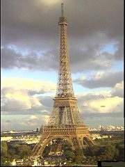
Eiffelova vì� v Paøí�i
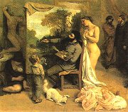
Courbet: Interiér mého ateliéru
|
|